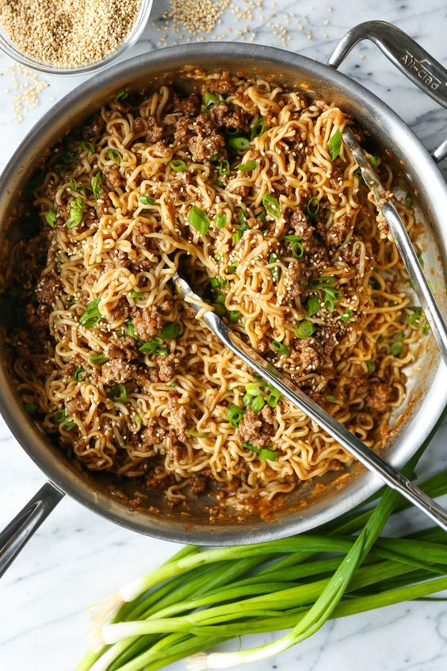

Ramen Stir Fry Noodle
Description
Fast, easy, and budget-friendly using ramen noodles and ground beef for an amazing, saucy stir fry the whole family will love! From Damn Delicious.
Ingredients
- 2 (3.5-ounce) packages instant ramen noodles, flavor packets discarded
- 1/3 cup beef stock
- 1/4 cup oyster sauce
- 1 tablespoon rice wine vinegar
- 1 teaspoon Sriracha, or more, to taste
- 1 tablespoon toasted sesame oil
- 1 pound lean ground beef
- 1 cup diced sweet onion
- 3 cloves garlic, minced
- 1 tablespoon freshly grated ginger
- 2 green onions, thinly sliced
- 1/2 teaspoon toasted sesame seeds
Steps
- In a large pot of boiling water, cook ramen noodles until tender, about 3-4 minutes; rinse with cold water and drain well.
- In a medium bowl, whisk together beef stock, oyster sauce, rice wine vinegar and Sriracha.
- Heat sesame oil in a large skillet over medium heat. Add ground beef and onion, and cook until beef has browned, about 3-5 minutes, making sure to crumble the beef as it cooks; drain excess fat.
- Stir in garlic and ginger until fragrant, about 1 minute.
- Stir in beef stock mixture, scraping any browned bits from the bottom of the skillet.
- Stir in ramen noodles until heated through and evenly coated in sauce, about 1-2 minutes.
- Serve immediately, garnished with green onions and sesame seeds, if desired.